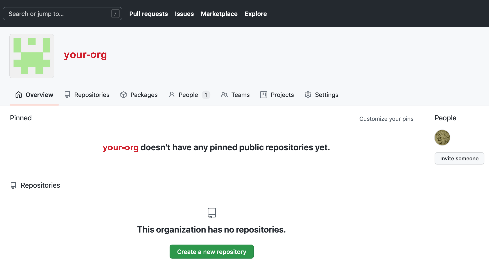
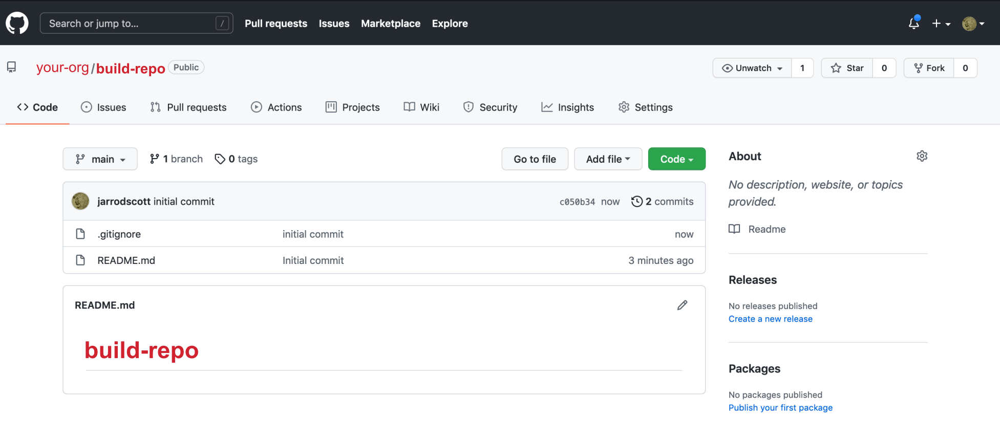
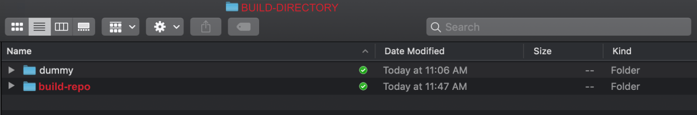
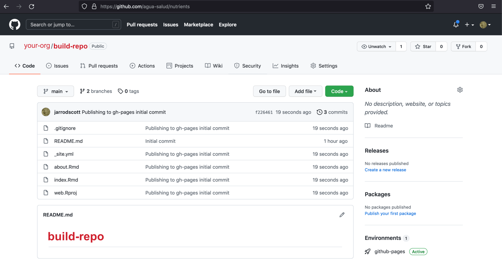

This is how I created this website for the SWELTR temperature manipulation experiment using a) Distill to build the site and b) GitHub Pages to host the site.
This tutorial assumes you have a) git installed, b) a GitHub account, c) RStudio installed, and d) Distill for R installed.
You will need to jump back and forth between the RStudio IDE and a terminal. You can use the terminal in RStudio if you wish, it is up to you.
I will try to point out which code you run in the RStudio console and which you run in a terminal. I will use different code block colors to help you differentiate between the two.
When you see a code block that looks like this, the command(s) must be executed in the RStudio console.
#R code blocks will look like this.When you see a code block that looks like this, the command(s) must be executed in a terminal.
#Terminal code will look like this.Overview
There are two main options for a GitHub Pages website.
- A user or organization site.
- A project site.
The difference between the two is that a user or organization site is a single site, like https://microbes.github.io/, and individual pages on this site are indexed like so:
https://microbes.github.io/about.html.
A project site on the other hand is like a collection of sites within a main site. A project site would have the same root URL (e.g., https://microbes.github.io/) but each project would have its own unique extension, like these examples:
https://microbes.github.io/deep-sea/ or https://microbes.github.io/forest-soils/.
Individual pages within a project site would be indexed like this: https://microbes.github.io/deep-sea/about.html
As mentioned above, the instructions here are for a GitHub Pages project site.
For more information see the GitHub Pages documentation. You can also check out A guide to using Github Pages.
Key Steps
Here is an overview of what we will be doing in this tutorial:
- Create organization on GitHub.
- Create two GitHub repos for the site, one to host the organization
URL and another to host the raw code plus the
gh-pagesbranch. - Clone the code repo to your computer.
- Create a
gh-pagesbranch. - Build the initial site with Distill for R.
- Customize the default
_site.ymlfile. - Rebuild the site.
- Push changes to GitHub.
1. GitHub Setup
Create organization on GitHub
If you already have an organization skip to the next step.
a) In the upper right-hand corner of your GitHub
page click on your avatar and select
Your organizations.

b) On the page that opens, hit
New organization.

c) Next, give your organization a name, provide an
email address, and indicate whether this is for a personal or
institutional account. Then hit Next.
The name of the organization does not need to be the same as the website you create later.

d) Here you can add members. For now, just hit
Complete setup.

Create repos for the site
In this section, we need to create two repositories for the site:
i) one to host the organization URL (i.e.,
https://sweltr.github.io/) and ii) another
to host the raw code (e.g..Rmd files)
plus the gh-pages branch. More on
that in a minute. I am including instructions for things you
MUST do in order to get the rest of the tutorial to work
properly.
a) Hit the
Create a new repository button.

b) First, we create the github.io repo to host the main site.
There are a few things to do here:
- Name the repo, Here we call it
sweltr.github.io. it doesnt matter what you call this but it must be unique and have the.github.ioextension. - Make sure repo is public.
- You must Initialize this repository with a README File.
- Hit the
Create repositorybutton. This creates themainbranch of the repo.
Note: you can host a site on GitHub without the
github.ioextension but that is a more advanced skill and beyond the scope of this tutorial.

c) Next, we create the build repo to host the project source code. These steps are similar to those described above.
- Name the repo, here we call it
high-temp. This will be the extension of the project site. So this projects URL will be https://sweltr.github.io/high-temp/. - Make sure the repo is public.
- You must Initialize this repository with a README File.
- Hit the
Create repositorybutton. This creates themainbranch of the repo.
Note: you can make these repos private, however that is a bit more advanced and beyond the scope of the tutorial provided here :)

Review
Here is what we have so far:
An organization at https://github.com/sweltr/ that
contains 2 repos, one for the GitHub Pages root URL, https://github.com/sweltr/sweltr.github.io
and another for the source code, https://github.com/sweltr/high-temp.
At this point both repos should only contain README
files.
We also have two URLs, one for the organiztion site (https://sweltr.github.io/) and another for the project site (https://sweltr.github.io/high-temp/).
2. Local Setup
Now that we have the main pieces in place of GitHub, it is time to setup everything on our local machine.
Clone the Code Repo
Lets take a look at the high-temp repo page. There are two
important things to point out. First, in the upper left corner is a box
that says main. This is the primary branch for the repo and
contains the source code for the site build (e.g., the .Rmd
files). This will become important in a moment when we create a branch
called gh-pages that will link the build files (e.g.,
.html files) to the organization URL. More on that in a
minute.
First, we need to clone the high-temp repo from GitHub
to our local machine. There are several ways to do this, but I will show
you how I do it. Navigate to the repo page. At the time of
creation, it looked like this:

See the green button that says Code. Click on that
button and copy the URL.

Open a terminal window and navigate to a place where you want the
repo to live on your computer. We will use the command
git clone with the URL you just copied. Run the clone
command and then cd into the directory.
git clone https://github.com/sweltr/high-temp.git
cd high-temp/Now have a look at the contents of the directory using the
ls command. We want to append the command with the
-al flag. The l option provides extended
details about each file/directory and the a option lists
hidden filesfiles/directories that begin with a period and are
hidden by default.
ls -alSo we have the README.md file that was generated when we
created the repo and a hidden directory called .git. The
.git directory is super, super important
because this is how the remote repo (on GitHub) and the local repo (on
your computer) keep track of changes.
total 8
drwxr-xr-x@ 4 scottjj 923590601 128 Oct 22 08:25 .
drwxr-xr-x@ 5 scottjj 923590601 160 Oct 22 08:25 ..
drwxr-xr-x@ 12 scottjj 923590601 384 Oct 22 08:25 .git
-rw-r--r--@ 1 scottjj 923590601 11 Oct 22 08:25 README.mdCreate a gh-pages branch
Great. We have the high-temp repo cloned on our local
machine. For historical reason, a GitHub Pages site needs to be built to
a directory called public/. But we do not need to upload
the public/ build directory to the main branch
on our repo. So, we are going to create a .gitignore file
and add public/ to that file. The .gitignore
tells git to ignore whatever is listed in that file when it
pushes local changes to the remote repository. As you build your site,
you will need to add additional items to the .gitignore
file.
echo public/ >> .gitignore # Add items as needed.If you run ls -al again you should see the
.gitignore file is now listed in the directory. If you type
nano .gitignore you can see the contents of the file.
OK, now lets push the changes we made to the local branch
(origin) to the remote branch (main). First,
run:
git statusHopefully you see the .gitignore file listed in red
along with some other details. This means there are untracked files in
your repo. Go ahead and run:
git add --all
git statusNow you should see the same files in green. This means the files are staged and ready to commit. Now run:
git commit -a -m "initial commit"
git push origin mainIf everything worked OK, your files have been pushed to the GitHub repo. Have a look at the code repo on GitHub to confirm your changes have been pushed.

Now, it is important that there is no public/ directory
yet. Just to make sure there is no public/ directory, we
can run the remove command in our terminal.
rm -rf public Now we go through the steps to create the the gh-pages
branch.
git checkout --orphan gh-pagesSwitched to a new branch 'gh-pages'git reset --hard
git commit --allow-empty -m "Initializing gh-pages branch"[gh-pages (root-commit) fd6028a] Initializing gh-pages branchgit push origin gh-pagesEnumerating objects: 2, done.
Counting objects: 100% (2/2), done.
Writing objects: 100% (2/2), 180 bytes | 180.00 KiB/s, done.
Total 2 (delta 0), reused 0 (delta 0), pack-reused 0
remote:
remote: Create a pull request for 'gh-pages' on GitHub by visiting:
remote: https://github.com/sweltr/high-temp/pull/new/gh-pages
remote:
To https://github.com/sweltr/high-temp.git
* [new branch] gh-pages -> gh-pagesgit checkout mainEnumerating objects: 2, done.
Counting objects: 100% (2/2), done.
Writing objects: 100% (2/2), 180 bytes | 180.00 KiB/s, done.
Total 2 (delta 0), reused 0 (delta 0), pack-reused 0
remote:
remote: Create a pull request for 'gh-pages' on GitHub by visiting:
remote: https://github.com/sweltr/high-temp/pull/new/gh-pages
remote:
To https://github.com/sweltr/high-temp.git
* [new branch] gh-pages -> gh-pages
(base) high-temp: scottjj$ git checkout main
Switched to branch 'main'
Your branch is up to date with 'origin/main'.git worktree add -B gh-pages public origin/gh-pagesPreparing worktree (resetting branch 'gh-pages'; was at fd6028a)
Branch 'gh-pages' set up to track remote branch 'gh-pages' from 'origin'.
HEAD is now at fd6028a Initializing gh-pages branchNow run the following to see what is in the repo directory.
ls -aldrwxr-xr-x@ 6 scottjj 923590601 192 Oct 22 08:41 .
drwxr-xr-x@ 5 scottjj 923590601 160 Oct 22 08:25 ..
drwxr-xr-x@ 14 scottjj 923590601 448 Oct 22 08:41 .git
-rw-r--r--@ 1 scottjj 923590601 8 Oct 22 08:40 .gitignore
-rw-r--r--@ 1 scottjj 923590601 11 Oct 22 08:40 README.md
drwxr-xr-x@ 3 scottjj 923590601 96 Oct 22 08:41 publicThere should now be a public/ directory. Run the
following to make sure this is a .git directory.
ls -al public/total 8
drwxr-xr-x@ 3 scottjj 923590601 96 Oct 22 08:41 .
drwxr-xr-x@ 6 scottjj 923590601 192 Oct 22 08:41 ..
-rw-r--r--@ 1 scottjj 923590601 104 Oct 22 08:41 .gitReview
At this point all the pieces are in place to build your site and host
it on GitHub. In addition to the repos you have on GitHub, you should
have a local directory of the code repo, in our case it is called
high-temp. In this directory there should be a
README.md file, a .gitignore file, a
.git directory, and the public/ directory.
3. Site Build
Time to build the site. As mentioned in the intro, we will use Distill to create the website. To keep things simple, we will generate the initial site in a temporary directory and copy the files to the git formatted directory at the end.
Open RStudio and hit File >> New Project. In the
pop-up window hit New Project.

Then in the New Project Wizard select the
New Directory option.

Under Project Type, scroll down until you see
Distill Website and select that option.

Give the Directory a name and hit Create Project.
Consider this an intermediate step in the process. We need to create a
project directory to generate the initial site. Eventually we will copy
all of these file to the directory of the repo we cloned earlier. You
can call this something like web if you wish, it doesnt
really matter since this is only a temporary directory.

Now, if everything worked OK, you should see three files open in your RStudio IDE.
index.Rmd. This is the landing page of your
site. This file is the first thing people see when they navigate to your
site.
about.Rmd. This is really just a sample page for your
site. You can use it or not, it is up to you.
_site.yml. This is a YAML file and is used to
configure your site. DO NOT erase this file.

In fact, we need to edit the _site.yml file to configure
it for our site. As you move further into building your site, you will
need to make many modifications to this file. For now however, we will
just focus on the minimum changes you need to make to get your site
online. Go ahead and click on that file. This is what the default file
looks like.

First, below the title line (beginning on line 2) add
the following lines.
base_url: https://sweltr.github.io/
repository_url: https://github.com/sweltr/high-temp/The base_url is the .github.io URL we
created way back when we created the site repo. The
repository_url is the repo we created to host the project
source code.
When you build or render your site, RStudio will dump all
the site files (e.g., .html files) in the
output_dir. The default output directory is
_site, which RStudio generated when you first created the
site. Take a look in your directory and you should see this sub
directory. I see no reason why you cannot leave the build directory as
is but I prefer to call mine public_build/. Go ahead and
edit that line of the _site.yml file.
output_dir: "public_build"Great. One last thing to do. When you render your site, RStudio will
try to add everything in the main directory to the output directory, in
this case public_build/. There are many cases where this is
not desirable. For example, lets say we have you have a directory
called sequence_data that contains a bunch of
fastq files. We do not need these files to build the site
(and we probably do not want these on GitHub) so we need to tell RStudio
to ignore these files when it builds the site. For that, we add the line
exclude below the output_dir line. Anything
listed here will be ignored by RStudio when it builds the site. As you
get deeper into building your site, you will likely have many
files/directories that you want excluded.
Dont get confused here. The
excludeline in the_site.ymlfile is different than the.gitignorefile discussed earlier. They do completely different things. If this is unclear, go back and review the section on the.gitignorefile.
For now, we will focus on the necessary things to include on the
exclude line. Multiple items must be listed within square
brackets, be in double quotes, and separated by commas. Go ahead and add
this line.
exclude: ["public_build", "public", "README.html", "README.md"]OK, a little explanation. The first thing we need to exclude in the
actual build directory public_build/ (or _site
if you kept the default). If we do not include this, RStudio will get
stuck in a loop where it continues to add public_build/ to
the public_build/ directory. Next, remember that to host a
gh-pages site, the build files (e.g., the .html files)
must be in a directory called public/. We
created this directory when we created the gh-pages
branch.
So why dont we just make the buld directory
public/instead ofpublic_build/or_site/?
Good question. The reason is that public/ is a special
directory that contains git related files (hidden by default). When we
render a site, RStudio will first overwrite the output directory,
thereby deleting the .git files, and then recreate the
output directory add the new build files. This is not cool. To avoid
this, we use an intermediate output directory,
public_build/ (or whatever you call it), to generate the
site. Than we can copy all the files from the output directory to the
public/ directory without losing the git info.
This is a little cumbersome but I have not yet found a workaround. This
is still an
issue as of this writing.
If you changed the name of the default build directory, go ahead and remove the default directory now. In your terminal type:
rm -r _siteNow, save all of your changes to the _site.yml file and
in the RStudio Console run the following:
rmarkdown::render_site()You should see a new directory called public_build/.
Open that folder and double-click on index.html. The
homepage of your new site should open in your default browser.
Review
Sweet. Lets review what we have so far. From the 1. GitHub Setup we created two repos, one to
host the .github.io organization and another to host the
raw code (e.g..Rmd files) plus the gh-pages branch. In 2. Local Setup we cloned the code repo and
create a gh-pages branch in a directory called public/. In
3. Site Build we generated an initial site
within a dummy directory, modified the _site.yml file, and
re-rendered the site to an output directory called
public_build/
Integration
Time to push our changes to GitHub. The first step is to copy all of
the files in your dummy site directory to the directory of the cloned
repo (high-temp).

First, in your terminal, navigate to the cloned repo directory. Use
the pwd command to confirm your location.
pwd/Users/scottjj/Dropbox (Smithsonian)/GITHUB_PROJECTS/AGUA_SALUD/high-tempAssuming your directory structure setup is similar to the image above, next run the following to copy all of the files.
cp -r ../dummy/* .Now take a look at the contents of the current working directory.
ls -alIt should look something like this:
drwxr-xr-x 14 scottjj 923590601 448 Oct 22 09:18 .
drwxr-xr-x@ 7 scottjj 923590601 224 Oct 22 09:15 ..
-rw-r--r--@ 1 scottjj 923590601 6148 Oct 22 09:18 .DS_Store
-rw-r--r-- 1 scottjj 923590601 50 Oct 22 09:18 .Rhistory
drwxr-xr-x 4 scottjj 923590601 128 Oct 22 09:18 .Rproj.user
drwxr-xr-x@ 14 scottjj 923590601 448 Oct 22 08:41 .git
-rw-r--r--@ 1 scottjj 923590601 8 Oct 22 08:40 .gitignore
-rw-r--r--@ 1 scottjj 923590601 11 Oct 22 08:40 README.md
-rw-r--r-- 1 scottjj 923590601 383 Oct 22 09:18 _site.yml
-rw-r--r-- 1 scottjj 923590601 162 Oct 22 09:18 about.Rmd
-rw-r--r-- 1 scottjj 923590601 296 Oct 22 09:18 index.Rmd
drwxr-xr-x@ 3 scottjj 923590601 96 Oct 22 08:41 public
drwxr-xr-x 7 scottjj 923590601 224 Oct 22 09:18 public_build
-rw-r--r-- 1 scottjj 923590601 225 Oct 22 09:18 web.RprojAt this point we need to do a few final housekeeping tasks. First,
lets add a few additional files to the .gitignore
file.
Run this command in your terminal. You should only see the
public/ directory listed.
nano .gitignoreAdd the following lines, save the file, and exit
nano.
.Rproj.user
.Rhistory
.RData
.Ruserdata
.Rapp.history
.DS_Store
web.Rproj
public_build/Now, copy all of the files from public_build/ to
public/.
cp -r public_build/* public/Then move into the public/ directory and run
git status.
cd public
git statusAll the untracked or changed files should be in red.
On branch gh-pages
Your branch is up to date with 'origin/gh-pages'.
Untracked files:
(use "git add <file>..." to include in what will be committed)
about.html
index.html
search.json
site_libs/
sitemap.xml
nothing added to commit but untracked files present (use "git add" to track)Now add the files to be committed and check the status again.
git add --all
git statusAll the untracked or changed files should now be green.
On branch gh-pages
Your branch is up to date with 'origin/gh-pages'.
Changes to be committed:
(use "git restore --staged <file>..." to unstage)
new file: about.html
new file: index.html
new file: search.json
new file: site_libs/anchor-4.2.2/anchor.min.js
new file: site_libs/autocomplete-0.37.1/autocomplete.min.js
new file: site_libs/bowser-1.9.3/bowser.min.js
new file: site_libs/distill-2.2.21/template.v2.js
new file: site_libs/font-awesome-5.1.0/css/all.css
new file: site_libs/font-awesome-5.1.0/css/v4-shims.css
new file: site_libs/font-awesome-5.1.0/webfonts/fa-brands-400.eot
new file: site_libs/font-awesome-5.1.0/webfonts/fa-brands-400.svg
new file: site_libs/font-awesome-5.1.0/webfonts/fa-brands-400.ttf
new file: site_libs/font-awesome-5.1.0/webfonts/fa-brands-400.woff
new file: site_libs/font-awesome-5.1.0/webfonts/fa-brands-400.woff2
new file: site_libs/font-awesome-5.1.0/webfonts/fa-regular-400.eot
new file: site_libs/font-awesome-5.1.0/webfonts/fa-regular-400.svg
new file: site_libs/font-awesome-5.1.0/webfonts/fa-regular-400.ttf
new file: site_libs/font-awesome-5.1.0/webfonts/fa-regular-400.woff
new file: site_libs/font-awesome-5.1.0/webfonts/fa-regular-400.woff2
new file: site_libs/font-awesome-5.1.0/webfonts/fa-solid-900.eot
new file: site_libs/font-awesome-5.1.0/webfonts/fa-solid-900.svg
new file: site_libs/font-awesome-5.1.0/webfonts/fa-solid-900.ttf
new file: site_libs/font-awesome-5.1.0/webfonts/fa-solid-900.woff
new file: site_libs/font-awesome-5.1.0/webfonts/fa-solid-900.woff2
new file: site_libs/fuse-6.4.1/fuse.min.js
new file: site_libs/header-attrs-2.11/header-attrs.js
new file: site_libs/headroom-0.9.4/headroom.min.js
new file: site_libs/jquery-3.6.0/jquery-3.6.0.js
new file: site_libs/jquery-3.6.0/jquery-3.6.0.min.js
new file: site_libs/jquery-3.6.0/jquery-3.6.0.min.map
new file: site_libs/popper-2.6.0/popper.min.js
new file: site_libs/tippy-6.2.7/tippy-bundle.umd.min.js
new file: site_libs/tippy-6.2.7/tippy-light-border.css
new file: site_libs/tippy-6.2.7/tippy.css
new file: site_libs/tippy-6.2.7/tippy.umd.min.js
new file: site_libs/webcomponents-2.0.0/webcomponents.js
new file: sitemap.xmlCommit the files.
git commit -m "Publishing to gh-pages initial commit"[gh-pages f30f1ff] Publishing to gh-pages initial commit
37 files changed, 22182 insertions(+)
create mode 100644 about.html
create mode 100644 index.html
create mode 100644 search.json
create mode 100644 site_libs/anchor-4.2.2/anchor.min.js
create mode 100644 site_libs/autocomplete-0.37.1/autocomplete.min.js
create mode 100644 site_libs/bowser-1.9.3/bowser.min.js
create mode 100644 site_libs/distill-2.2.21/template.v2.js
create mode 100644 site_libs/font-awesome-5.1.0/css/all.css
create mode 100644 site_libs/font-awesome-5.1.0/css/v4-shims.css
create mode 100644 site_libs/font-awesome-5.1.0/webfonts/fa-brands-400.eot
create mode 100644 site_libs/font-awesome-5.1.0/webfonts/fa-brands-400.svg
create mode 100644 site_libs/font-awesome-5.1.0/webfonts/fa-brands-400.ttf
create mode 100644 site_libs/font-awesome-5.1.0/webfonts/fa-brands-400.woff
create mode 100644 site_libs/font-awesome-5.1.0/webfonts/fa-brands-400.woff2
create mode 100644 site_libs/font-awesome-5.1.0/webfonts/fa-regular-400.eot
create mode 100644 site_libs/font-awesome-5.1.0/webfonts/fa-regular-400.svg
create mode 100644 site_libs/font-awesome-5.1.0/webfonts/fa-regular-400.ttf
create mode 100644 site_libs/font-awesome-5.1.0/webfonts/fa-regular-400.woff
create mode 100644 site_libs/font-awesome-5.1.0/webfonts/fa-regular-400.woff2
create mode 100644 site_libs/font-awesome-5.1.0/webfonts/fa-solid-900.eot
create mode 100644 site_libs/font-awesome-5.1.0/webfonts/fa-solid-900.svg
create mode 100644 site_libs/font-awesome-5.1.0/webfonts/fa-solid-900.ttf
create mode 100644 site_libs/font-awesome-5.1.0/webfonts/fa-solid-900.woff
create mode 100644 site_libs/font-awesome-5.1.0/webfonts/fa-solid-900.woff2
create mode 100644 site_libs/fuse-6.4.1/fuse.min.js
create mode 100644 site_libs/header-attrs-2.11/header-attrs.js
create mode 100644 site_libs/headroom-0.9.4/headroom.min.js
create mode 100644 site_libs/jquery-3.6.0/jquery-3.6.0.js
create mode 100644 site_libs/jquery-3.6.0/jquery-3.6.0.min.js
create mode 100644 site_libs/jquery-3.6.0/jquery-3.6.0.min.map
create mode 100644 site_libs/popper-2.6.0/popper.min.js
create mode 100644 site_libs/tippy-6.2.7/tippy-bundle.umd.min.js
create mode 100644 site_libs/tippy-6.2.7/tippy-light-border.css
create mode 100644 site_libs/tippy-6.2.7/tippy.css
create mode 100644 site_libs/tippy-6.2.7/tippy.umd.min.js
create mode 100644 site_libs/webcomponents-2.0.0/webcomponents.js
create mode 100644 sitemap.xmlAnd finally push the files to the gh-pages branch.
git push origin gh-pagesEnumerating objects: 55, done.
Counting objects: 100% (55/55), done.
Delta compression using up to 8 threads
Compressing objects: 100% (45/45), done.
Writing objects: 100% (54/54), 1.37 MiB | 348.00 KiB/s, done.
Total 54 (delta 1), reused 0 (delta 0), pack-reused 0
remote: Resolving deltas: 100% (1/1), done.
To https://github.com/sweltr/high-temp.git
fd6028a..f30f1ff gh-pages -> gh-pagesDo the same for the build files. Make sure you back out of the public
directory with the cd ../ command. This time you are
pushing to the main branch, not the gh-pages
branch.
cd ../
git status
git add --all
git status
git commit -m "Publishing to gh-pages initial commit"
git push origin mainNow head over to your GitHub code repo and look at the two branches
to make sure everything looks good. In this case, https://github.com/sweltr/high-temp. You should see the
main branch of this repothis contains all of the
.Rmd files.

Find the button in the upper left that says main. Click
on that and select gh-pages.

The gh-pages branch contains all of the
.html files.

Wait a few minutes and navigate to your project webpage. In our case, https://sweltr.github.io/high-temp/.
You site should be LIVE!!!
Adding content
Most of the steps up to this point should only need to be done once. Now it is time to add content to your site, customize the look, etc. From this point forward, whenever you make changes that you want to make public, you need to do the following:
- Render the site.
rmarkdown::render_site()Or to build individual pages run:
rmarkdown::render_site("new_page.Rmd")- Copy files from
public_build/topublic/
cp -r public_build/* public/- Commit and push the changes to the
gh-pagesbranch.
cd public/
git status
git add --all
git status
git commit -m "added new page"
git push origin gh-pages- Commit and push the changes to the
mainbranch.
cd ../
git status
git add --all
git status
git commit -m "added new page"
git push origin mainSource Code
The source code for this page can be accessed on GitHub by clicking this link.
Last updated on
[1] "2022-06-02 13:16:37 EST"